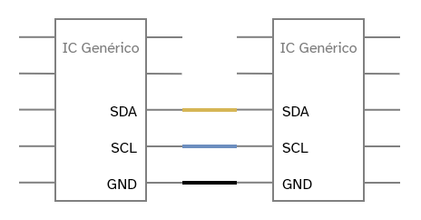
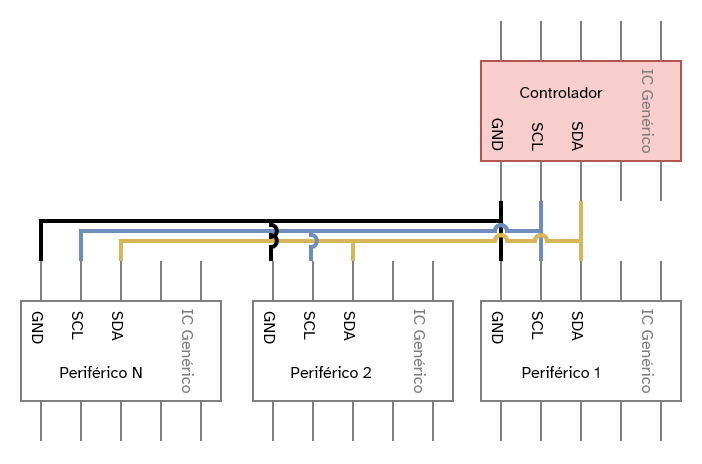

I2C
\(I^2C\) Inter-Integrated Circuit
O I2C é um protocolo de comunicação serial que permite a conexão de múltiplos dispositivos periféricos (escravos) a um ou mais dispositivos controladores (mestres). Diferente do UART que é ponto-a-ponto, o I2C utiliza um barramento compartilhado, o que simplifica significativamente a fiação em projetos com vários sensores e atuadores.
Conexão Física
Para a comunicação, o I2C utiliza apenas duas linhas de sinal, além da
referência de aterramento (GND). Os pinos são dedicados e conhecidos como:
-
SDA(Serial Data Line): Linha por onde os dados são enviados e recebidos. -
SCL(Serial Clock Line): Linha que carrega o sinal de clock, sincronizando a comunicação.

A conexão é feita em paralelo: todos os pinos SDA são conectados juntos e
todos os pinos SCL são conectados juntos. Lembre-se também de conectar os
pinos GND de todos os dispositivos para garantir uma referência de tensão
comum.
No I2C, um dispositivo atua como controlador (mestre), responsável por
iniciar a comunicação e gerar o sinal de clock na linha SCL. Os outros
dispositivos, os periféricos (escravos), “escutam” o barramento e só
respondem quando são chamados pelo controlador através de um endereço único.

Cada dispositivo em um barramento I2C precisa ter um endereço único, que geralmente é um número de 7 bits. É através desse endereço que o controlador consegue se comunicar com um periférico específico, mesmo que vários outros estejam conectados no mesmo barramento. A colisão de endereços é um problema comum e deve ser verificada no datasheet dos componentes.
Programando
No ambiente do Arduino, utilizamos a biblioteca Wire.h, que se encarrega de
abstrair e gerenciar toda a comunicação de baixo nível do protocolo I2C.
Cenário 1: Controlador requisita e periférico responde
Neste exemplo, o controlador solicita 6 bytes de dados do periférico com o endereço 2. O periférico, por sua vez, aguarda uma requisição e responde com a mensagem “hello2”.
/**
* CONTROLADOR
* Fazendo requisição
*/
#include <Wire.h> //Incluo a biblioteca de comunicação I2C
void setup() {
Wire.begin(); // Inicializo o *bus* I2C como controlador
Serial.begin(9600); // Inicializo o serial para debug
}
void loop() {
// Faço uma requisição para o periférico de endereço 2, esperando 6 bytes
Wire.requestFrom(2, 6);
while (Wire.available()) { // Enquanto a comunicação estiver ativa:
char c = Wire.read(); // Recebo a informação byte a byte
Serial.print(c);
}
Serial.println();
delay(500);
}
/**
* PERIFÉRICO
* Respondendo requisição do controlador
*/
#include <Wire.h>
void setup() {
Wire.begin(2); // Se conecta ao "bus" I2C com o endereço 2
Wire.onRequest(requestEvent); // Registro a função que será chamada em uma requisição
}
void loop() {
delay(100);
}
// Esta função é executada toda vez que o controlador requisitar dados
// para o endereço registrado (2).
void requestEvent() {
Wire.write("hello2"); // Respondo a mensagem com 6 bytes.
}
Cenário 2: Controlador envia e periférico recebe
Aqui, o controlador envia continuamente uma string e um valor numérico para o periférico de endereço 2. O periférico está configurado para receber esses dados e exibi-los em seu próprio monitor serial.
/**
* CONTROLADOR
* Enviando dados
*/
#include <Wire.h>
void setup()
{
Wire.begin(); // Inicializa como controlador
}
byte x = 0;
void loop()
{
Wire.beginTransmission(2); // Inicia transmissão para o periférico de endereço 2
Wire.write("x is "); // Envia uma string (5 bytes)
Wire.write(x); // Envia o valor da variável x (1 byte)
Wire.endTransmission(); // Finaliza a transmissão
x++;
delay(500);
}
/**
* PERIFÉRICO
* Consome informação do controller
*/
#include <Wire.h>
void setup()
{
Wire.begin(2); // Se conecta ao "bus" I2C com o endereço 2
Wire.onReceive(receiveEvent); // Registro a função que será chamada ao receber dados
Serial.begin(9600); // Inicializo o serial para debug
}
void loop()
{
delay(100);
}
// Esta função é executada toda vez que o controlador enviar dados
// para o endereço registrado (2). O parâmetro 'howMany' indica
// quantos bytes foram recebidos.
void receiveEvent(int howMany)
{
while(Wire.available())
{
char c = Wire.read(); // recebe o byte como um caractere
Serial.print(c); // imprime o caractere
}
Serial.println(); // Pula uma linha ao final da mensagem
}